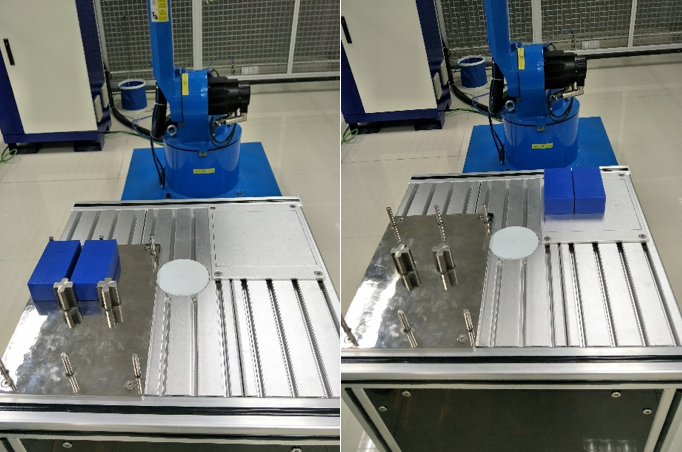
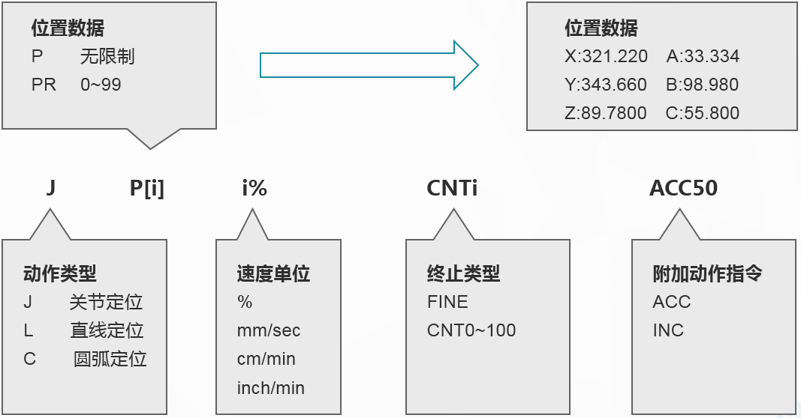
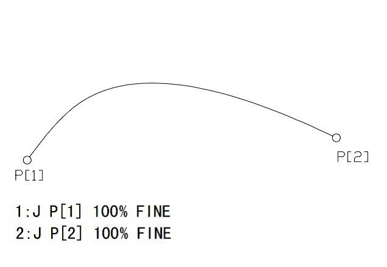
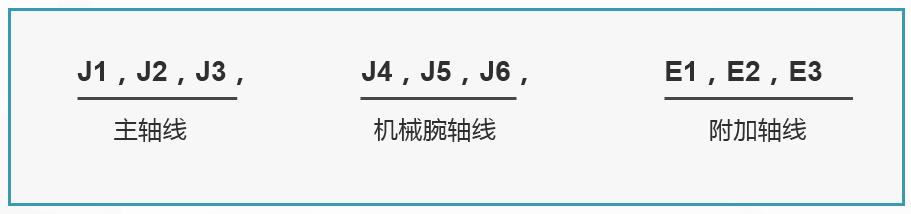

2.2搬运编程与操作
2.2.1运动指令
[任务描述]
利用机器人将两个物料搬运到托盘上。大家需要在此任务中完成工件搬运程序的编写、程序数据创建、目标点示教、程序调试，自动运行程序最终完成工件的整个搬运过程。

图2-14 搬运任务示意图
[知识准备]
运动指令用来实现以指定速度、特定路线模式等将工具从一个位置移动到另一个指定位置。在使用运动指令时需指定以下几项内容：
动作类型：指定采用什么运动方式来控制到达指定位置的运动路径,机器人动作类型有三种：关节定位（J）、直线运动（L）、圆弧运动（C）；
位置数据：指定运动的目标位置；
进给速度：指定机器人运动的进给速度；
运动指令格式如下：

图2-15 运动指令格式
在程序示教过程中，使用菜单树中的“运动指令”即可添加标准的运动指令，详细操作步骤将在任务的具体实施中进行说明。
1、关节运动指令J
关节定位是移动机器人各关节到达指定位置的基本动作模式。独立控制各个关节同时运动到目标位置，即机器人以指定进给速度，沿着（或围绕）所属轴的方向，同时加速、减速或停止。工具的运动路径通常是非线性的，在两个指定的点之间任意运动。以最大进给速度的百分数作为关节定位的进给速度，其最大速度由参数设定，程序指令中只给出实际运动的倍率。关节定位过程中没有控制被驱动的工具的姿态。
指令格式：J P[2] 100 % FINE
指令注释：机器人以最大进给速度的100%采用关节定位方式从起始点移动至目标点P[2]点。
程序说明如下：
J——关节定位
P[2]——位置数据，指定运动位置的目标位置。在进行运动指令示教时，位置数据也同时被写入程序文件。关节坐标系下的位置数据用每个关节的角度位置定义，关节坐标系位于每个关节的基准面。在关节坐标系下的关节坐标位置数据为（J1、J2、J3、J4、J5、J6、），没有姿态信息。当复制指令时，位置及相关信息也一同被复制。
100 %——进给速度，指定机器人运动的进给速度。进给速度单位取决于动作指令类型，当动作类型为关节定位时，指定最大进给速度的百分数，范围从1%到100%；在程序执行过程中，进给速度可以通过倍率进行修调。倍率值范围为0%到150%。
FINE——增量模式，步长为10。

图2-16 J关节定位
2、位置数据
位置数据包括目标点位置和机器人的姿态。在进行运动指令示教时，位置数据也同时被写入程序文件。在关节坐标系下的关节坐标位置数据为（J1、J2、J3、J4、J5、J6、），没有姿态信息。关节坐标系位于每个关节的基准面，关节坐标系下的位置数据用每个关节的角度为之定义。

图2-17 位置数据（关节坐标）
示例1:
J P[1]30%FINE
在运动指令中，位置数据通过位置变量（P[i]）和位;;置寄存器（PR[i]）表示。一般情况下，使用位置变量。
表2-2 位置数据表示
| 序号 | 位置数据表示 | 功能 |
| 1 | 位置变量 P[i] | 是指用于保存位置数据的变量。在示教过程中，位置数据被自动保存到程序文件中，此时的坐标系均为当前所选择的，当复制指令时，位置及相关信息也一同被复制。位置变量的取值范围无限制。 |
3、进给速度
进给速度指机器人的运动速度。在程序执行过程中，进给速度可以通过倍率进行修调。倍率值范围0%到150%。进给速度单位取决于动作指令类型。
1）指令： J P[1] 50% FINE
指令注释：机器人以最大进给速度的50%采用关节定位方式移动至P[1]；
当动作类型为关节定位时，指定最大进给速度的百分数，范围从1%到100%； 示例：
1：J P[1] 50% FINE